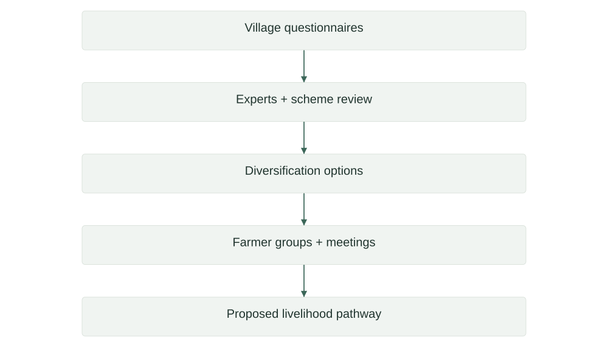
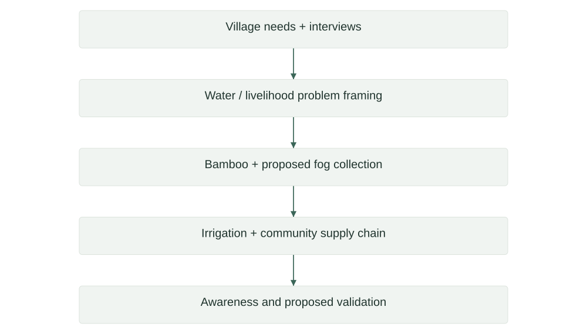

Research
- 01WERMWeed Emergence Risk MappingResearch prototype
- 02AgroDry (Stubby)Image-based soil-moisture estimationApplication prototype
- 03QFM ResearchPhaseForge · frequency and morphology in CNNsResearch implementation
- 04KS-ProbeLLM context-retention benchmarkingBenchmark implementation
- 05Fabrication After Tool FailureTool-use research · Paper 1Research preprint
- 06When Tools Get in the WayTool-use research · Paper 2Research preprint


Software

Engineering & design
- 10RoblocsAutonomous robotics · National Robotics LeagueTeam engineering portfolio
- 11Maverick MotorsportsMiniature race-car design, aerodynamics and manufacturingTeam engineering portfolio
- 12HeliosTransparent photovoltaic glazing · research and prototypingResearch & prototype concept
- 13EV CruiseVehicle-integrated solar and proposed energy bufferingResearch & prototype concept
Social projects

↗
↗